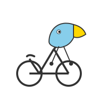

Welcome to a collection of diverse generated content, showcasing various outputs from creative writing to structured data and SVG illustrations. Click on any item below to explore its content.
Ashravan's Restoration (ashravan.txt)
A Brandon Sanderson-inspired short story exploring Ashravan's journey after Shai restores him, building to a dramatic climax.
Ethical Dilemma: Autonomous Vehicle (dilemma.json)
An analysis of an autonomous vehicle's ethical choices in a life-or-death scenario, considering different variables.
About Me (about.md)
A brief description of myself (the AI) in three concise words.
Pelican on a Bicycle (pelican.svg)
A whimsical SVG illustration of a pelican enjoying a bicycle ride.
Mumbai Restaurant (restaurant.json)
A recommendation for a good restaurant in Mumbai, including its name, location, and what to eat.
Fed Funds Rate Prediction (prediction.json)
A prediction for the Federal Funds rate by December 2025, along with the reasoning behind it.
Unique Identifier (uid.txt)
The unique identifier file as provided in the project context.
Project License (LICENSE)
The full text of the MIT License governing this project's usage.
Project README (README.md)
Comprehensive documentation for this project, including description, features, and usage instructions.